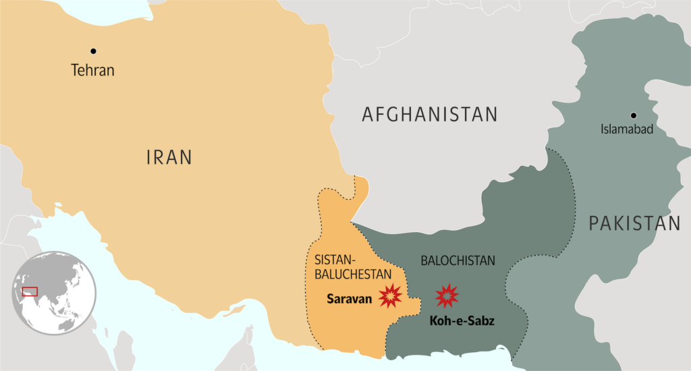

More than a sibling squabble is going on here. Iran and Pakistan were apparently targeting hideouts of armed non-state actors—Jaish al-Adl in Pakistan, and the Balochistan Liberation Army and the Balochistan Liberation Front in Iran—that each country accuses the other of harboring. Will the tit-for-tat strikes escalate? How does this flashpoint fit in with ongoing conflicts involving Iranian proxies in Yemen and Gaza? Below, experts from our Atlantic Council family share their insights.
The reciprocal attacks between Pakistan and Iran were a marked escalation to decades of skirmishes along one of the world’s more remote border regions. The international response may well be confused, since no one knows much about the area or about the terrorist groups or even the internal decision-making process of the countries involved. The Baloch separatists have always been opaque to outsiders, and much more so organizations like Jundullah and its offshoot Jaish al-Adl. In the past, most observers would have been reasonably confident that the situation would not escalate given that both sides have now thrown a punch. Iran and Pakistan have a long history of workmanlike relations, and conflict is not in their interest. The Pakistani military is led by practical (if newly appointed) generals who know their limits but could not stand by domestically while Pakistani territory was attacked. But no one knows how the Iranians will react given other pressures in the region or whether one of the ragtag terrorist groups could provoke another confrontation. The international community has limited options to reduce tensions, although the United States is no doubt urging restraint. Unfortunately, US influence with Islamabad has waned because of the US decision to keep Pakistan, and particularly the Pakistani army, at arm’s length. Pakistan’s chief of army staff received that message loud and clear in his recent visit to Washington. There has been little concern in Washington, and maybe even a little smugness, about the proliferation of cross-border attacks from Afghanistan and the state of Pakistan’s economy. It would not take much effort on the part of the United States to use this incident to begin to rebuild trust with Pakistan instead of ceding leadership to China. The overworked Qataris, who have good relations with both countries, could play a role, as could others, such as Kuwait and maybe even Saudi Arabia. —Anne Patterson is a former US assistant secretary of state for Near Eastern affairs. She served as US ambassador to Pakistan from 2007 to 2010.
There has been a tendency in the media to view the recent Iranian attack on Pakistani territory and Pakistani attack on Iranian territory as somehow related to the Israel-Hamas conflict, but it is not. Nor does it necessarily portend a larger Iranian-Pakistani conflict. Neither Iran nor Pakistan launched an attack against the other’s forces or assets. Instead, each attacked against what they consider to be jihadi forces inside the other’s territory that the other also considers problematic. While Pakistan had long supported the Taliban against the US-backed Kabul government before its downfall, jihadists have become an increasing threat to the Pakistani government. And the Baloch forces whom Pakistan targeted inside Iran are causing problems for Iran as well. A cynic might even claim that Tehran and Islamabad have done each other something of a favor.
In my view, Pakistani and Iranian forces are not likely to get into a shooting match
with each other. If they do, though, the United States will be less able to serve as a mediator due to its lack of relations with Iran than would other powers—such as China, Russia, and possibly the European Union—that can work with both countries.
—Mark N. Katz is a nonresident senior fellow with the Atlantic Council’s Middle East Programs.
The delicate and fraught Iran-Pakistan relationship approached a breaking point this week with an Iranian attack inside Pakistan’s Balochistan province on Jaish al-Adl, the successor of the long-standing Jundullah, which is designated as a Foreign Terrorist Organization by the United States.
Pakistan’s expected and rapid response early on January 18 via an aerial attack on Baloch nationalists using Iran as a base raised the ante but it is unclear if both countries have the desire or the ability to escalate to direct conflict with each other’s forces. It is not clear if Pakistan’s caretaker Prime Minister Anwaar-ul-Haq Kakar, who attended the World Economic Forum in Davos this week, took that decision or whether the military took it for him, since he had a public meeting with the Iranian foreign minister in Davos. Kakar reportedly called a meeting of his National Security Council on his return to Pakistan.
As far back as 2007, reports by ABC News and others hinted at US covert assistance to Jundullah against Iran. Meanwhile, Pakistan is allege
d to have played a role in the capture of its leader Abdolmalek Rigi by Iran in 2010. If Iran believes that the United States has been covertly aiding Jaish al-Adl, that could explain Tehran’s decision to attack inside Pakistani territory. Pakistan risks being drawn into this conflict. A big question is why it allowed Jaish al-Adl to operate inside its province of Balochistan. Was it a continuation of past favors for the United States? If so, Pakistan may pay a price in its deteriorating relationship with Iran, which risks harming the two countries’ trade relations, which surpass two billion dollars per year. Energy reportedly makes up a significant part of this trade, especially in the form of diesel fuel and electricity in border areas of Pakistan. An equally important question is why Iran has allowed Baloch nationalists to use its territory as sanctuary and Indian agents to operate out of Iranian Balochistan for operations against Pakistan.
A weak caretaker government in Pakistan cobbled together to hold elections on February 8 may not be best equipped to deal with these complicated issues, allowing the military to take center stage yet again.
—Shuja Nawaz is a distinguished fellow and founding director of the South Asia Center of the Atlantic Council and author of The Battle for Pakistan: The Bitter US
Friendship and a Tough Neighborhood.